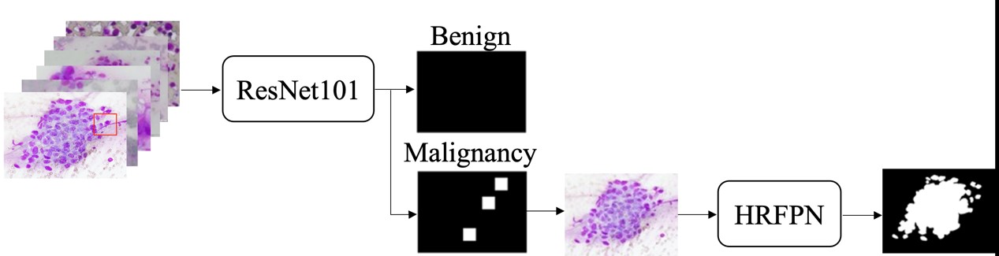
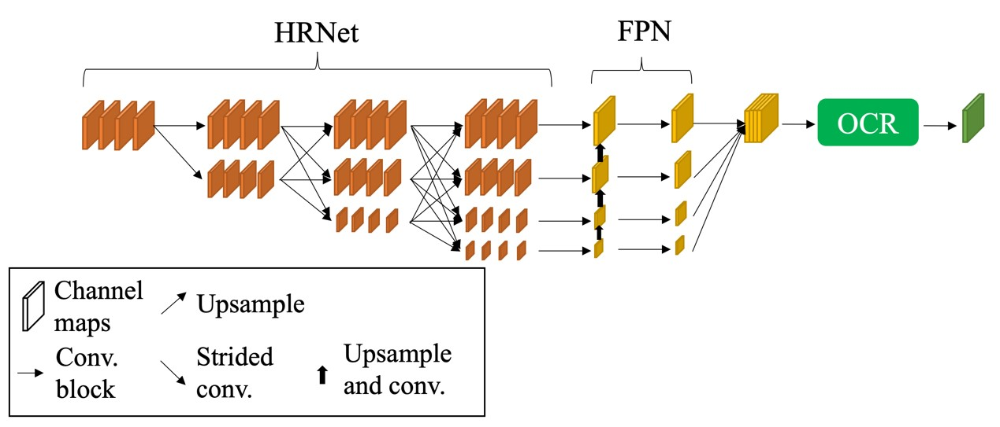
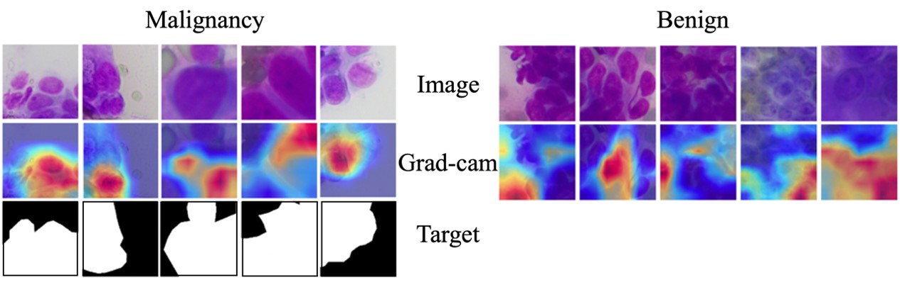

肺部細胞影像分類及語意分割之自動診斷輔助系統
Lung Cytologic AI: Automatic Diagnosis Aid System with Cytologic Image Classification and Segmentation
摘要
本研究旨在建立一套先分類肺部細胞良惡性，再對肺部惡性細胞做語意分割標註惡性細胞區域的深度學習自動輔助肺部細胞診斷系統，來大幅加速肺部細胞診斷，進而減少病患因細胞診斷被中斷手術的時間，並以高準確度輔助醫師診斷減少醫療資源浪費。

近年細胞辨識技術包含影像處理與各類的卷積神經網路，然而若選用的模型層數較淺，將導致無法精準辨認特徵複雜的肺部惡性細胞。相較於以往深度學習研究使用手動框選小影像進行分類，本研究建立一套自動診斷機制，自動化框選小影像進行訓練與檢測，並利用ResNet的殘差對映使網路加深以學習更多肺部惡性細胞特徵，提升肺部細胞良惡性分類準確度。加上HRFPN與OCR模塊針對大小肺部細胞的高專注度與修正能力，本研究可以同時精準地標註出不同大小肺部惡性細胞區域加速醫師診斷。

此外本研究將使用台灣常用於肺部細胞染色的Hemacolor染色資料集進行研究，相較世界其他地方使用柏氏染色能有效應用於台灣肺部細胞診斷。本研究提出之自動輔助診斷系統優點：(1)適於台灣肺部細胞診斷，(2)大幅加速肺部細胞檢測流程，縮短病人因細胞診斷而被延長的手術時間，(3)高準確偵測肺部惡性細胞輔助診斷節省醫療資源。本研究以ResNet101達到98.8%的小影像分類準確度，較先前的文獻高。同時以整張影像為單位的良惡性分類準確度達到95.5%，以病人為單位的良惡性分類準確度達到比先前文獻高的92.9%。在語意分割任務上，本研究使用的HRFPN搭配OCR模塊也達到94.5%的F1 score，而整體系統的運算也達到了1.53的FPS。因此，本研究不但可以利用深度學習的高速計算特性使診斷時間大量減少，同時也以高準確度偵測惡性細胞並輔助醫師診斷。


關鍵詞：良惡性分類、卷積神經網路、深度學習、氣管內視鏡超音波、肺部細胞影像、語義分割